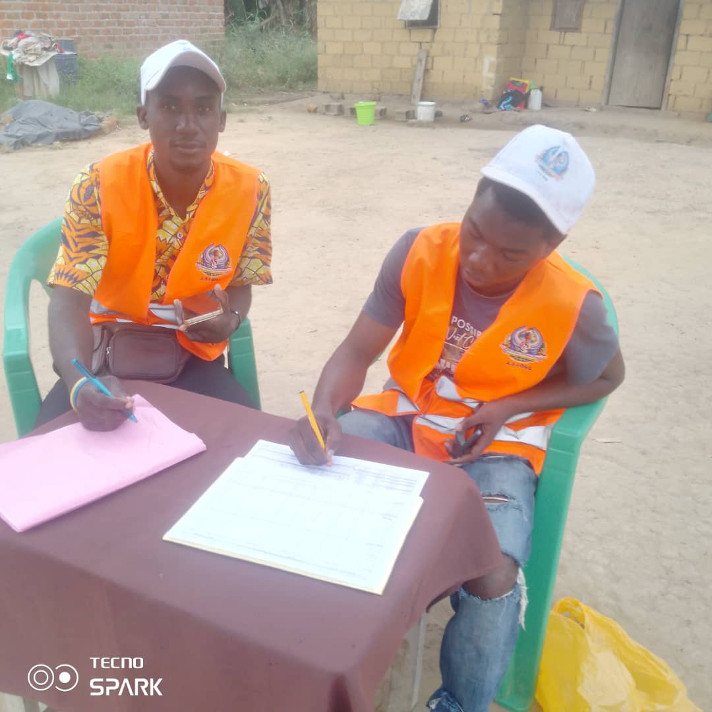
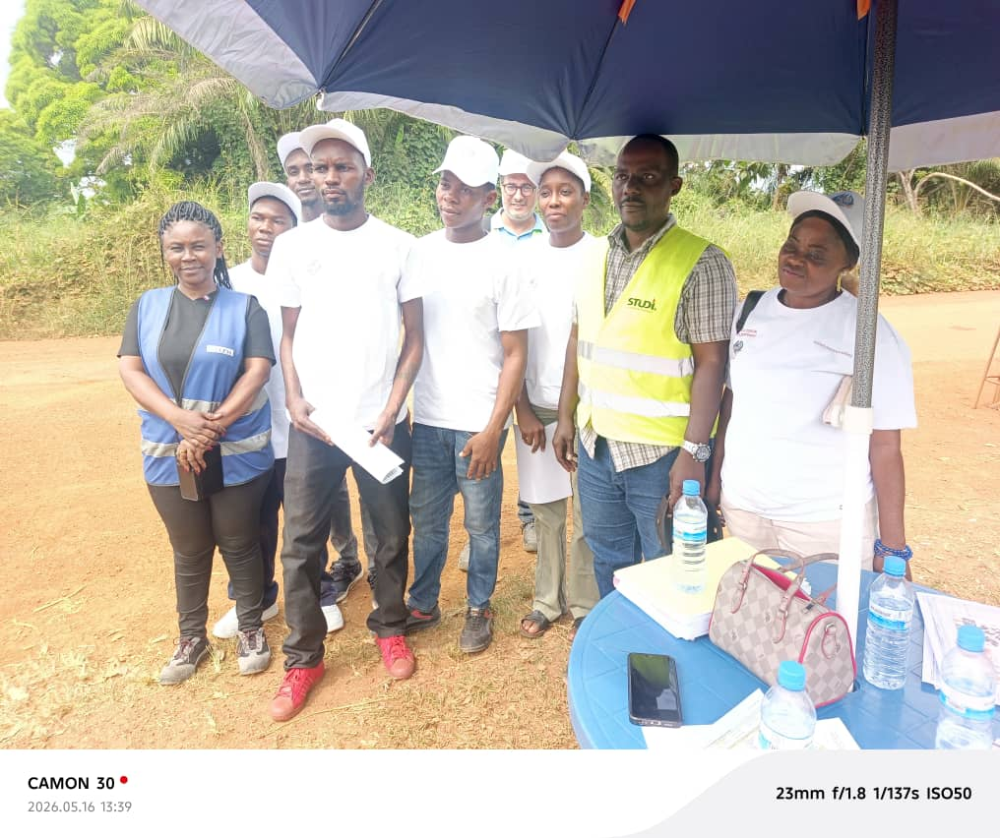
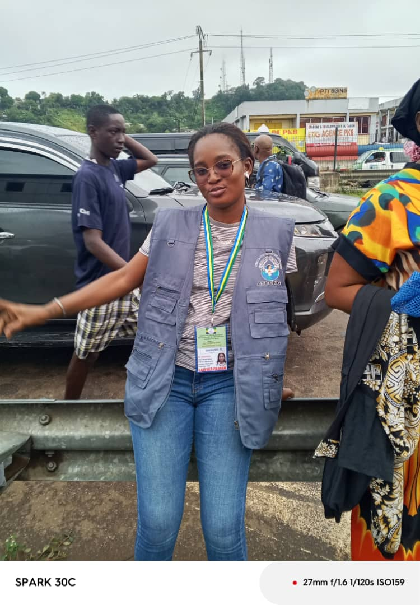
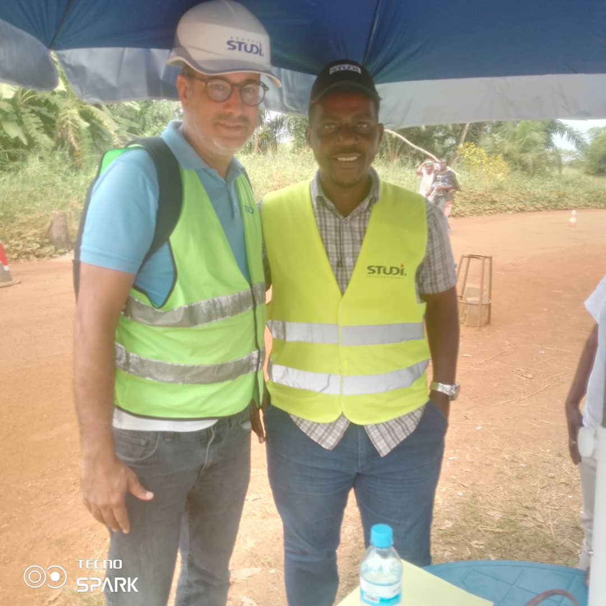

L'assainissement et la jeunesse gabonaise, pris au sérieux.
ASI-ONG conçoit et opère des programmes concrets d'assainissement, d'économie circulaire du plastique et d'accompagnement des jeunes leaders — au service des quartiers de Libreville et au-delà.

Nous pensons que l'assainissement d'un quartier et l'avenir de sa jeunesse relèvent du même travail.
Depuis Akébé-Plaine, ASI-ONG construit des solutions locales et durables : collecte des déchets ménagers, transformation du plastique en matériaux utiles, formation des jeunes leaders, information par la radio communautaire, et accompagnement sanitaire des familles.
Chaque programme est pensé pour durer au-delà du financement qui l'a lancé — c'est ce qui distingue une intervention ponctuelle d'un changement réel.
Cinq leviers, un même terrain
Chaque programme est autonome mais s'appuie sur les mêmes équipes et les mêmes quartiers, pour un impact qui se cumule dans la durée.
Assainissement & pré-collecte
Coordination des circuits de collecte des déchets ménagers via SYPIG/SEPI, sous arrêtés municipaux, dans plusieurs zones de Libreville.
Économie circulaire du plastique
Transformation des déchets plastiques collectés en pavés écologiques — un projet d'économie circulaire porté vers un dépôt de brevet OAPI.
Radio ASI-FM
Une radio communautaire pour informer, sensibiliser et donner la parole aux quartiers sur les enjeux d'assainissement et de citoyenneté.
Les Leaders de Demain
Plateforme de formation et d'engagement citoyen pour la jeunesse gabonaise, avec des missions d'observation électorale à l'international.
Santé — Drépanocytose
Premier programme gabonais d'accompagnement, de formation et d'éducation thérapeutique pour les enfants atteints de drépanocytose.
Un projet à porter avec nous ?
Nous construisons nos programmes avec des partenaires techniques et financiers.
Nous écrireDu déchet plastique au pavé écologique
Notre projet phare transforme un problème visible de nos quartiers — le plastique dispersé — en matériau de construction utile. Un cycle réel, en quatre étapes.
Nos campagnes, vues de l'intérieur
Un aperçu filmé de nos actions de terrain, de la mobilisation communautaire aux partenariats techniques.
Campagne de sensibilisation à la lutte contre le VIH-SIDA, en partenariat avec la société chinoise CFHEG, sur l'axe routier Ovan–Makokou (Ogooué-Ivindo).
Voir sur Facebook →Campagne de sensibilisation communautaire et en milieu professionnel contre le VIH-SIDA et le paludisme, en partenariat avec la société chinoise COVEC, sur l'axe routier Ndéndé–Tchibanga : dépistage, distribution de flyers et de préservatifs.
Voir sur Facebook →ASI-ONG classée parmi les 5 premiers lors d'un concours d'exposition de pavés écologiques issus du recyclage du plastique. Voir la publication →
Un travail construit avec des partenaires
ASI-ONG développe ses programmes en lien avec des institutions publiques, des bailleurs et des entreprises présentes au Gabon.
Ce que nous faisons, sur le terrain

Mission de comptage routier sur le corridor Ndéndé–Doussala
Une mission de 8 jours menée avec 11 agents pour le compte de Studi International Gabon.

Fiche technique des circuits de collecte remise à la Mairie
SYPIG/SEPI formalise ses zones d'intervention auprès des autorités municipales de Libreville.

Campagnes de sensibilisation et d'accompagnement sanitaire
Des équipes mobilisées sur le terrain pour l'information et le dépistage auprès des familles.
La problématique des déchets plastiques, à l'approche de la Semaine environnementale
Un communiqué d'ASI-ONG sur l'enjeu des déchets plastiques à Libreville. Lire sur Facebook →
Parlons de votre soutien à ASI-ONG
Institution, bailleur, média ou futur bénévole — nous répondons à chaque message.